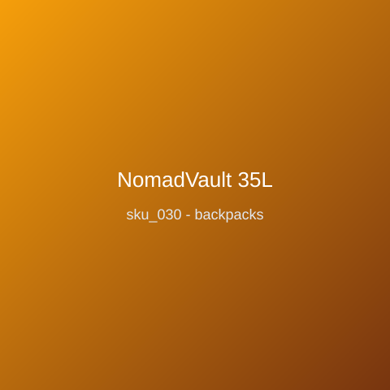

Price: ₹2,999
Anti-theft travel backpack with lockable YKK zippers, hidden rear pocket, and RFID-safe valuables pouch. 35L clamshell opens flat for packing cubes; external USB pass-through (powerbank not included); water-repellent 900D shell; luggage pass-through strap; 1.25kg; fits 17-inch laptops; rear handle slides over suitcase trolleys for airport runs.